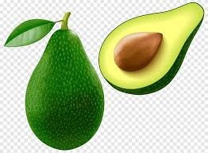

An orange is a fruit of various citrus species in the family Rutaceae ; it primarily refers to Citrus sinensis, |
 Penicillium rot Penicillium rots are the most significant and widely reported infections |
 Oranges are classified as citrus fruits. There are a lot of species, but there are only two main ones - sweet and bitter |
|  Avocados are rich in many nutrients, including fiber, healthy fats, vitamin C, vitamin E, vitamin B6, potassium, magnesium, and folate. |
An orange is a fruit of various citrus species in the family Rutaceae ); it primarily refers to Citrus × sinensis, which is also called sweet orange, |
 A banana is the common name for a type of fruit and also the name for the herbaceous plants that grow it. These plants belong to the genus Musa. |